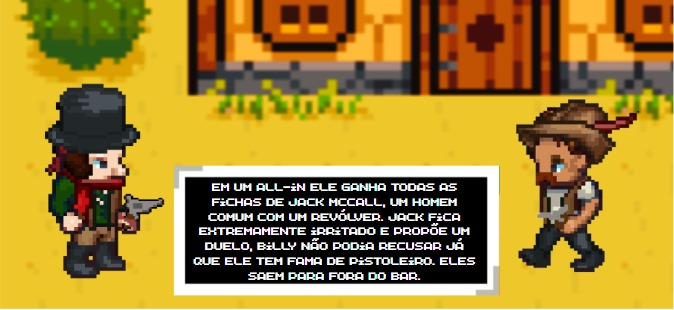
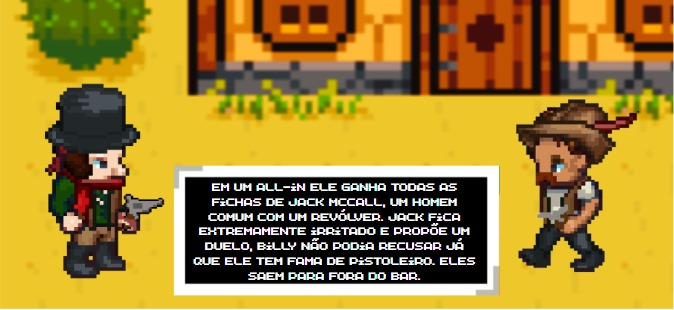

Experiência Criativa
Com a proposta de uma oficina de projetos, estamos com a mão na massa desde o primeiro dia, aprendendo a criar aplicativos de verdade na prática! Nessa jornada, não só aprendemos a codificar, mas também a inovar e pesquisar, sempre com uma visão global. O objetivo é sair daqui desenvolvendo nossos próprios aplicativos de forma colaborativa, alinhados às demandas do mercado.
Projeto 1 — Criação de Jogos
Criação de um jogo em equipe utilizando o Construct. Cada integrante assumiu papéis como programador, designer ou redator, colaborando para criar um jogo de qualidade.
 

Projeto 2 — Programação Multimídia
Desenvolvimento de um aplicativo multimídia no Processing com Java, abordando temas como sustentabilidade e extensão universitária.


Projeto 3 — Programação Web
Criação de um aplicativo web com HTML, CSS e JavaScript, validado com o público-alvo e focado em temas sustentáveis.

Raciocínio Algorítmico
Introdução ao pensamento computacional e desenvolvimento de algoritmos. Aprendemos a usar variáveis, estruturas de controle e de dados, preparando a base para disciplinas futuras.
Tudo isso por meio de TDEs que ao longo do tempo ajudo a consolidar o conhecimento em Python!
🔗Veja aqui!
Trabalho Colaborativo 1
Jogo de Pedra, Papel e Tesoura em Python, com múltiplos modos de jogo, histórico de partidas e tratamento de erros.
Trabalho Colaborativo 2
Jogo Batalha Naval em Python, com menus, IA, controle de turnos e critérios de vitória, aplicando lógica de programação, matrizes e funções modularizadas e com +500 linhas!
Filosofia
Desenvolvimento de senso crítico e reflexão sobre a condição humana. Disciplina essencial para a formação acadêmica e pessoal.
TDE
Produção de um vídeo sobre o futuro das profissões, inspirado nas ideias de Harari e Hawking. Trabalho realizado em grupo, com entrevistas e pesquisa.
🔗 IA-Entrevista!Sistemas Ciberfísicos
Exploração de módulos microprocessados, IoT e sistemas ciberfísicos, conectando hardware, redes e serviços em nuvem.
Pesquisa sobre Hardware
Estudo sobre memórias primárias (RAM, DRAM) e sua relação com a arquitetura de Von Neumann, apresentado com vídeos e exemplos práticos.


Lógica Matemática
Aprendizado sobre lógica formal, métodos de dedução e representação de problemas. Base fundamental para o desenvolvimento computacional.
Lista de Exercícios
Realização de exercícios para fixar os conceitos e preparar-se para avaliações, aplicando lógica matemática na prática.